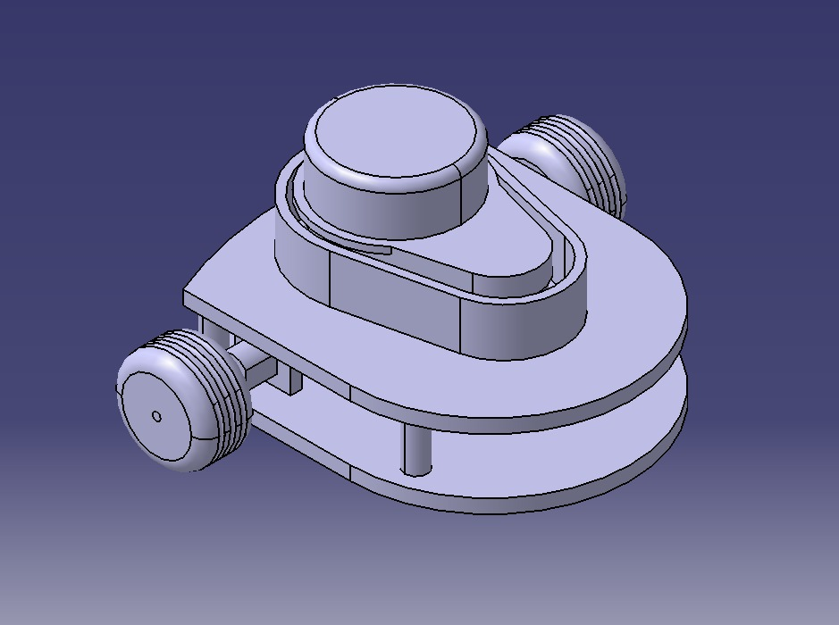
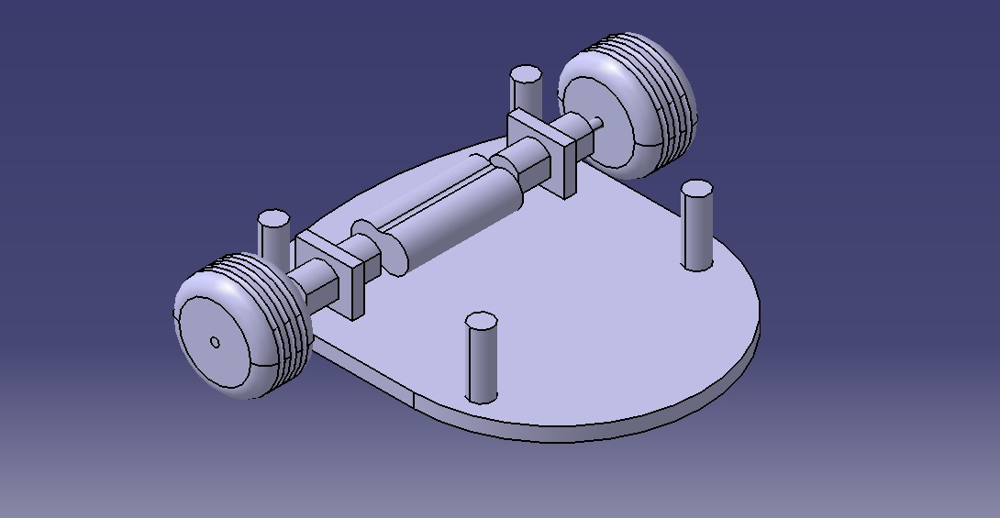

Projeto Conceitual da Estrutura do Produto¶
1. Características gerais¶
O projeto tem como objetivo o desenvolvimento de um robô autônomo capaz de mapear e solucionar labirintos desconhecidos de diferentes dimensões.O sistema integra chassi, hardware de controle , algoritmos de navegação e um sistema web para transmissão de telemetria em tempo real. Assim, o objetivo desse documento é apresentar o projeto conceitual da parte de estruturas, o qual engloba o chassi, suporte, carenagem, atuadores, transmissão, rodas/hélices.
2. Dimensões¶
Esta seção descreve as medidas gerais, proporções e tolerâncias dimensionais do projeto, garantindo a compatibilidade entre os componentes e o espaço de operação.
2.1 Dimensões Externas Gerais:¶
100 mm de comprimento x 120 mm de largura x 60 mm de espessura;
3.Materiais¶
Esta seção detalha os insumos e matérias-primas selecionados com base em critérios de resistência, peso, custo e disponibilidade.
3.1 Estrutura Principal¶
A estrutura principal será em parte de Polímero PLA\PETG impresso em 3D.
3.2 Componentes Externos e Revestimentos¶
Peças acessórias em PLA para suporte dos sensores e suporte do pacote de bateria Li-ion 2S.
3.3 Elementos de Fixação e União¶
Parafusos métricos M2 e M2.5 de aço inox para fixação da placa principal (MCU ESP32-C3) e do suporte do LiDAR. A equipe conta com a capacidade de criar apoios já impressos na estrutura para facilitar o encaixe e possíveis manutenções.
4. Partes fundamentais¶
O intuito dessa seção é mapeiar e definir os subconjuntos mecânicos e estruturais que compõem o sistema.
4.1 Chassi¶
Estrutura base de suporte mecânico responsável por alojar a bateria Li-ion 2S, fixar os suportes dos motores, manter os conversores Buck (+5V0 e +3V3) e garantir a estabilidade do robô
4.2 Suportes¶
Suportes laterais para acoplamento rígido dos motores M1 (Esquerdo) e M2 (Direito). Torre/Suporte elevado para o sensor LiDAR ST-L50B2. Suporte com trava para a bateria Li-ion 2S.
4.3 Atuadores¶
Motores e cilindros responsáveis pela execução dos movimentos e trabalho mecânico. 2x Motores DC com caixa de redução (tensão nominal de 6V).
4.4 Transmissão¶
Sistema de engrenagens, correias ou eixos para transferência de torque e rotação. Transmissão direta do eixo do motor de redução para a roda.
4.5 Rodas / Hélices¶
Componentes de contato ou propulsão com o meio (solido ou fluido). -2 Rodas de alta aderência (pneus de borracha/silicone) acopladas aos eixos principais; -1 Esferas de transferência (rodízios omnidirecionais/caster ball) em nylon/aço para apoio e equilíbrio; -2 Encoders integrados de quadratura incremental (M1: GPIO0/GPIO1 | M2: GPIO3/GPIO10) para leitura de velocidade e posição.
5. Explicação do desenho¶
Esta seção traz uma leitura detalhada da geometria apresentada na representação gráfica, explicando o arranjo espacial dos componentes.
5.1 Vista Geral¶
Descrição da disposição tridimensional do projeto e de seu posicionamento operacional.O robô apresenta uma configuração de tração diferencial simétrica. A bateria Li-ion 2S está posicionada na parte inferior central para manter o centro de gravidade o mais baixo possível, garantindo estabilidade nas acelerações. A placa com a MCU ESP32-C3-MINI-1 e o driver DRV8833 fica posicionada em nível intermediário, enquanto o LiDAR ST-L50B2 ocupa o topo da estrutura com campo de visão livre de 360° ou voltado para a frente/laterais.
5.2 Fluxo de Montagem¶
-Fixação dos motores M1 e M2 e dos rodízios de apoio na parte inferior do chassi; -Encaixe das rodas com acoplamento aos eixos dos encoders; -Alojamento do pacote de Bateria Li-ion 2S com a BMS e chave de potência; -Fixação da placa de controle e conexões dos drivers DRV8833 e reguladores Buck; -Montagem do sensor LiDAR ST-L50B2 no topo e roteamento final da fiação UART e de alimentação.
5.3 Pontos de Atenção Visual¶
Passagem da fiação dos encoders e alimentação dos motores, posicionamento da chave de ligar/desligar de fácil acesso externo e alinhamento do sensor LiDAR para evitar bloqueio do feixe óptico.
6. Justificativa das principais decisões de projeto¶
Esta seção argumenta os motivos técnicos, econômicos ou ergonômicos que fundamentaram as escolhas feitas ao longo da concepção.
6.1 Escolha de Materiais¶
A opção pelo chassi impresso em PLA/PETG deve-se à rápida prototipagem, baixo custo de fabricação, facilidade para substituição de partes danificadas e otimização de peso para respostas dinâmicas mais rápidas.
6.2 Definição Dimensional¶
Motivação para o dimensionamento adotado (espaço físico disponível, ergonomia ou restrições de transporte). As dimensões reduzidas foram projetadas para atender aos requisitos estabelecidos pelos orientadores do projeto, professores, permitindo a análise e manobras em curvas sem risco de colisão nas paredes do labirinto com dimensões pré-definidas .
6.3 Seleção de Mecanismos¶
Razões pelas quais o tipo de transmissão, atuadores e estrutura escolhidos atendem melhor aos requisitos funcionais em detrimento de alternativas descartadas.
7. CAD¶

Figura 1 – Micromouse
Figura 2 – Base micromouseArquivos CAD para download¶
Base Superior
Protótipo do carrinho
Motor
Base
Baterias
Colunas
Rodas